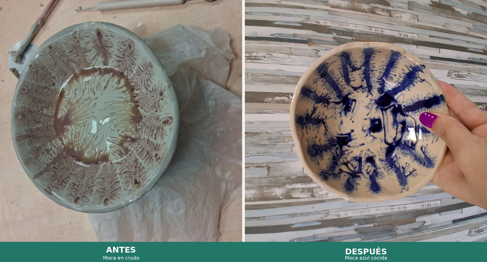
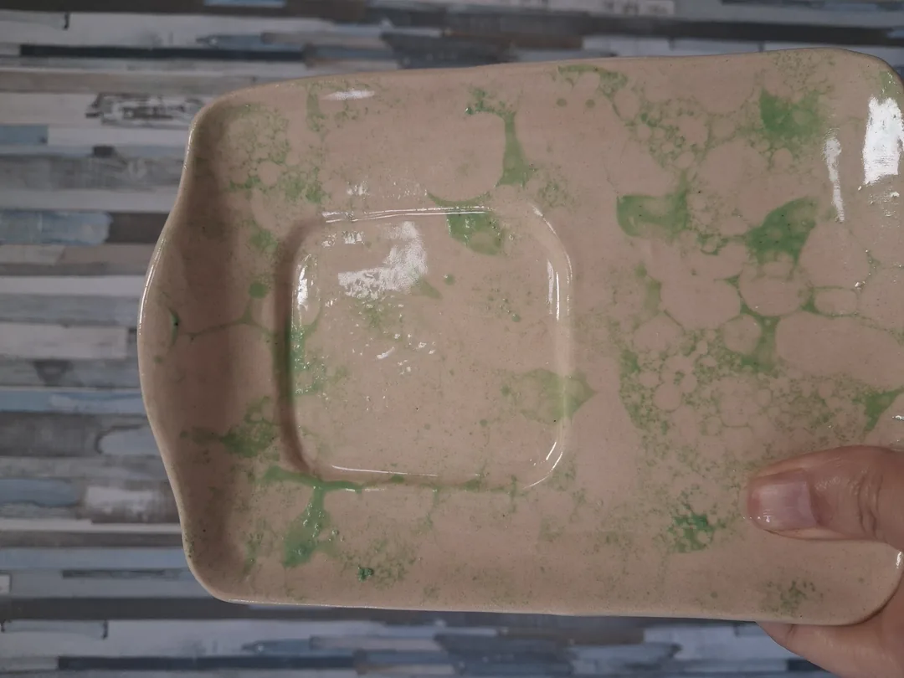
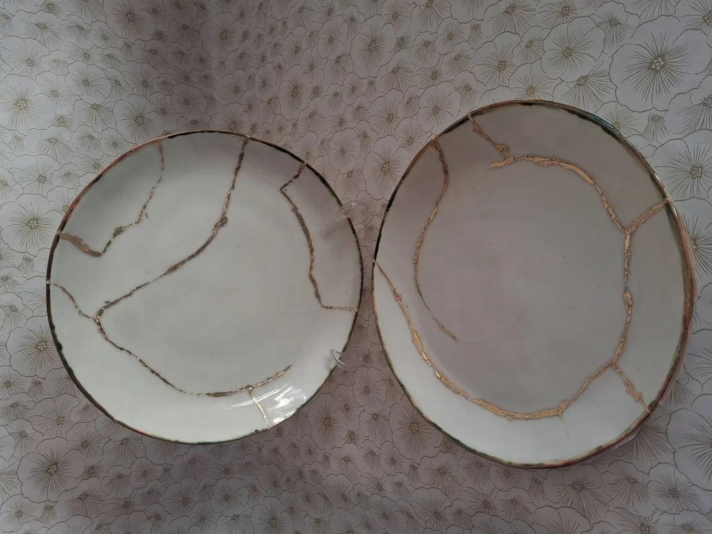
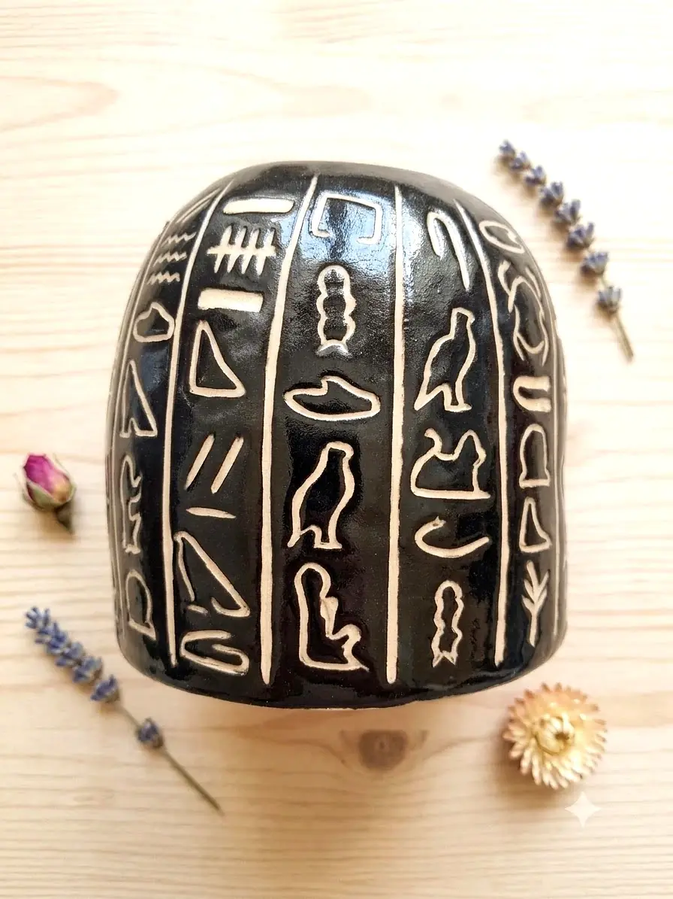

En cerámica hay dos grandes momentos creativos: el modelado y la decoración. Si el primero es donde das forma a la pieza, el segundo es donde le das carácter, historia y personalidad. Y la variedad de técnicas que existen es, sinceramente, apabullante.
En este artículo te presentamos las técnicas de decoración que más trabajamos en nuestro taller de Valladolid — desde las más sencillas para principiantes hasta las que requieren un poco más de paciencia y práctica.
📋 En este artículo
Técnica Moca Nivel intermedio
La técnica moca (también llamada mocha diffusion) es una de las más mágicas y sorprendentes que existen. Consiste en aplicar una solución ácida — generalmente hecha con tabaco, té o colorante — sobre un engobe húmedo. La reacción química que se produce crea patrones que recuerdan a ramas de árboles, helechos o paisajes de tundra.
Lo más fascinante de esta técnica es que nunca sabes exactamente cómo va a quedar. Puedes guiar el resultado controlando la humedad del engobe, la concentración de la solución y el ángulo de la pieza, pero la naturaleza siempre tiene la última palabra.



La hemos aplicado con engobe blanco y solución de azul cobalto — el resultado son esas ramas azul marino sobre fondo crema que tanto gusta en el taller. También funciona muy bien con verdes, negros y ocres.
Cómo se hace paso a paso
- Aplica una capa de engobe de base sobre la pieza en estado de cuero. Debe estar húmeda pero no chorreante.
- Prepara la solución moca: haz una infusión concentrada de tabaco o té negro y añade unas gotas de colorante si quieres un color más intenso.
- Con un pincel fino, deposita pequeñas gotas de la solución sobre el engobe húmedo.
- Observa cómo se expanden y crean los patrones orgánicos. Puedes inclinar la pieza para guiar la dirección.
- Deja secar completamente y hornea como de costumbre.
Decoración con Burbujas Para principiantes
La decoración con burbujas es, probablemente, la técnica que más exclamaciones de "¡oooh!" genera en el taller. La idea es sencilla: se hace una mezcla de engobe, jabón y agua, se sopla con una pajita hasta crear espuma, y luego se imprime ese patrón de burbujas sobre la pieza.
El resultado son círculos irregulares, orgánicos, que se solapan y crean una textura muy parecida a las células vistas al microscopio o a las pompas de jabón en un charco.

- Mezcla engobe de color con agua y unas gotas de jabón lavavajillas.
- Sopla con una pajita hasta formar espuma abundante.
- Presiona suavemente la pieza sobre la espuma o vuelca la espuma sobre la pieza.
- Retira el exceso con cuidado y deja secar.
- Puedes superponer varias capas de colores distintos para mayor complejidad.
Kintsugi Nivel intermedio
El kintsugi (金継ぎ) es una filosofía y una técnica de reparación japonesa que tiene más de 500 años de historia. Su premisa es tan sencilla como poderosa: en lugar de esconder las roturas de una pieza, se resaltan con polvo de oro o plata mezclado con laca. Las cicatrices se convierten en el elemento más bello de la pieza.
En occidente lo hemos adaptado usando resinas o lacas especiales mezcladas con pigmentos dorados o cobrizos — el resultado es igualmente impresionante y mucho más accesible.

"Roto y reparado es más fuerte que nunca. En el kintsugi, la fractura es la historia."
- Junta los fragmentos de la pieza rota y limpia bien las roturas.
- Prepara la mezcla de resina epoxi o laca con polvo dorado o cobrizo.
- Aplica la mezcla en las grietas con precisión, usando un palillo fino.
- Une los fragmentos y mantén presión hasta que seque.
- Retira el exceso cuando esté seco y pule suavemente.
Esgrafiado Nivel intermedio
El esgrafiado consiste en aplicar una capa de engobe de un color sobre la pieza y, cuando está semiseca, raspar con punzones o herramientas de modelado para revelar el color de la arcilla base. El resultado son dibujos con un contraste muy marcado y una textura que invita a tocar.
Es una técnica con una larga historia: aparece en cerámica egipcia, etrusca y persa. Hay algo casi arqueológico en revelar lo que hay debajo. Por eso decimos que el esgrafiado no dibuja — descubre.

- Modela tu pieza y espera a que alcance el estado de cuero.
- Aplica engobe de color (blanco, negro o cualquier tono que contraste con tu arcilla) con pincel o esponja.
- Deja secar hasta que el engobe esté seco al tacto pero la arcilla siga siendo flexible.
- Dibuja con punzón, palillo o herramienta de modelado, raspando el engobe para revelar la arcilla de debajo.
- Retira el polvo sobrante con un pincel suave y deja secar completamente.
Engobe y pintura sobre arcilla Para principiantes
El engobe es arcilla diluida en agua, a veces con colorantes añadidos. Se aplica sobre la pieza en crudo o en bizcocho y es la base de muchas otras técnicas de decoración. Se puede usar como pintura directamente, crear degradados, hacer reservas con cera o cinta adhesiva, o combinar con las técnicas anteriores.

Con engobe puedes conseguir desde acabados monocromáticos elegantes hasta patrones complejos con plantillas, sellos o pinceles. Es, sin duda, el punto de partida para cualquier ceramista que quiera explorar la decoración.
Esmalte y técnicas de vidriado Nivel intermedio
El esmalte es una capa de vidrio que se funde sobre la cerámica durante la cocción. Da ese brillo característico a las piezas, las impermeabiliza y permite una enorme variedad de colores y efectos. La magia del esmalte es que no siempre sabes exactamente cómo va a quedar hasta que abres el horno.
Hay muchas formas de aplicar esmalte: inmersión (sumergir la pieza en el esmalte líquido), vertido, pincel, aerógrafo o incluso a mano alzada. Cada método da resultados distintos y combinando técnicas se pueden conseguir efectos muy sorprendentes.

Mishima Nivel avanzado
La técnica mishima tiene origen en la cerámica coreana y consiste en incisar un dibujo sobre la arcilla húmeda y rellenar las incisiones con engobe de otro color. Una vez seco, se raspa el exceso para revelar el dibujo incrustado con total precisión.
El resultado son dibujos muy limpios, con líneas finas y un contraste elegante. Es una técnica que requiere paciencia y pulso, pero los resultados son espectaculares. Muy usada para letras, motivos florales y diseños geométricos.
- Incide el dibujo o texto sobre la pieza en estado de cuero con un punzón fino.
- Rellena las incisiones con engobe de color contrastante, asegurándote de que entre bien en las ranuras.
- Deja secar hasta que el engobe esté seco al tacto.
- Raspa el exceso de engobe con una espátula o esponja húmeda, revelando el dibujo incrustado.
- Pule suavemente con una esponja fina para acabar.
Terra Sigillata Nivel avanzado
La terra sigillata (del latín "tierra sellada") es una barbotina muy fina y purificada que, aplicada sobre la pieza y bruñida antes de la cocción, crea un acabado satinado o casi metálico sin necesidad de esmalte. Era la técnica de la cerámica romana de lujo — esas piezas de color rojo coral brillante que ves en los museos.
Hoy la usamos tanto en su versión clásica (cocción a baja temperatura sin oxígeno para piezas rojizas) como en variantes modernas con distintos óxidos y temperaturas. Es una técnica muy particular: el brillo viene del bruñido físico, no de la química del esmalte.
Técnica Marmolada Para principiantes
La técnica marmolada — también conocida como shaving cream marbling — es una de las formas más sorprendentes y accesibles de conseguir un acabado con aspecto de mármol en cerámica. El resultado imita las vetas y manchas del mármol natural con una facilidad que desconcierta a quien lo ve por primera vez.
El proceso se basa en una propiedad curiosa de la espuma de afeitar: su textura densa y estable permite que los colores floten en su superficie sin mezclarse, formando patrones que luego se transfieren a la pieza.

Cómo se hace paso a paso
- Extiende una capa generosa de espuma de afeitar en un recipiente plano o bandeja.
- Añade gotas de engobe líquido o colorante cerámico de varios colores sobre la espuma.
- Con un palillo o brocheta, dibuja líneas sinuosas por la superficie de la espuma sin mezclar del todo los colores — el patrón de mármol surge en este paso.
- Presiona suavemente la pieza sobre la espuma con el lado que quieres decorar hacia abajo.
- Levanta la pieza y retira el exceso de espuma con una espátula o cartón. Los colores quedan adheridos a la superficie.
- Deja secar completamente antes de esmaltar y hornear.
Es una técnica perfecta para piezas planas como platos y bandejas, aunque también funciona muy bien en cuencos. El efecto final varía mucho según los colores elegidos: con blanco y gris se consigue un mármol clásico; con verdes y ocres, un efecto más orgánico y silvestre.
Resumen de técnicas
Una vista rápida de todas las técnicas para que tengas la referencia a mano:
Moca
Patrones orgánicos con reacción química
Burbujas
Círculos con espuma de engobe
Kintsugi
Reparar con oro lo roto
Esgrafiado
Dibujar raspando el engobe
Engobe
Pintura de arcilla líquida
Esmalte
Vidriado que nace del horno
Mishima
Incrustación de arcilla
Terra Sigillata
Brillo romano sin esmalte
Marmolada
Vetas de mármol con espuma
La decoración no es lo último que haces a una pieza. Es donde decides quién va a ser.
Más del blog de CreArte

¿Quieres probar alguna de estas técnicas?
En nuestro taller de Valladolid las practicamos en grupos reducidos. Ven a mancharte las manos — materiales y cocciones incluidos.